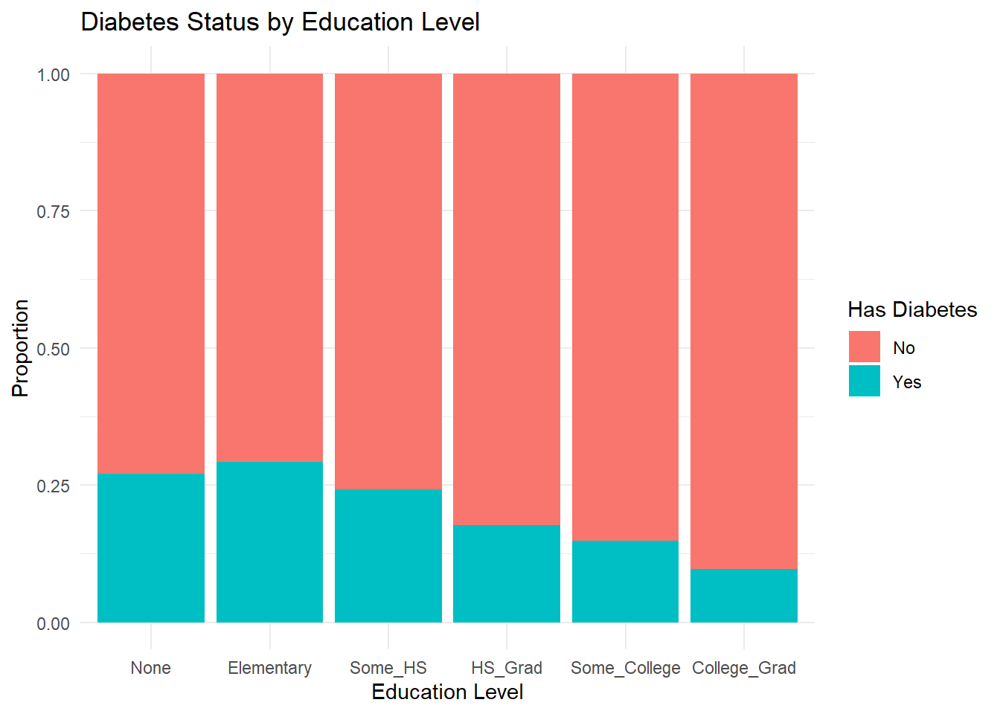
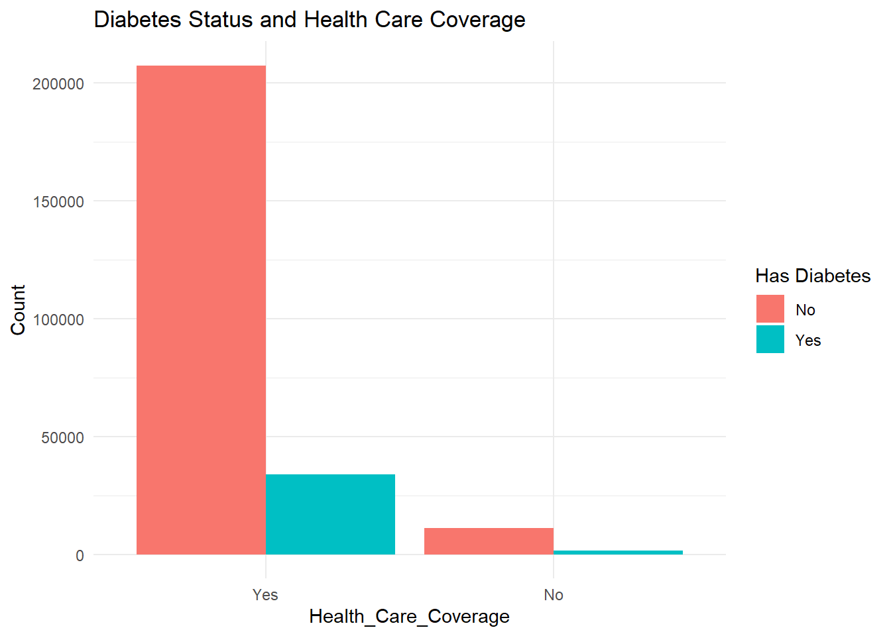
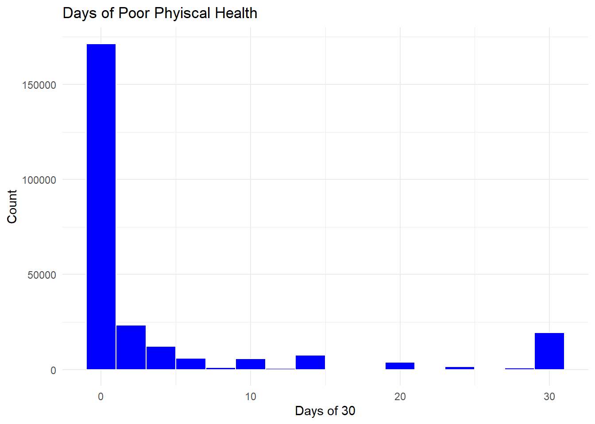
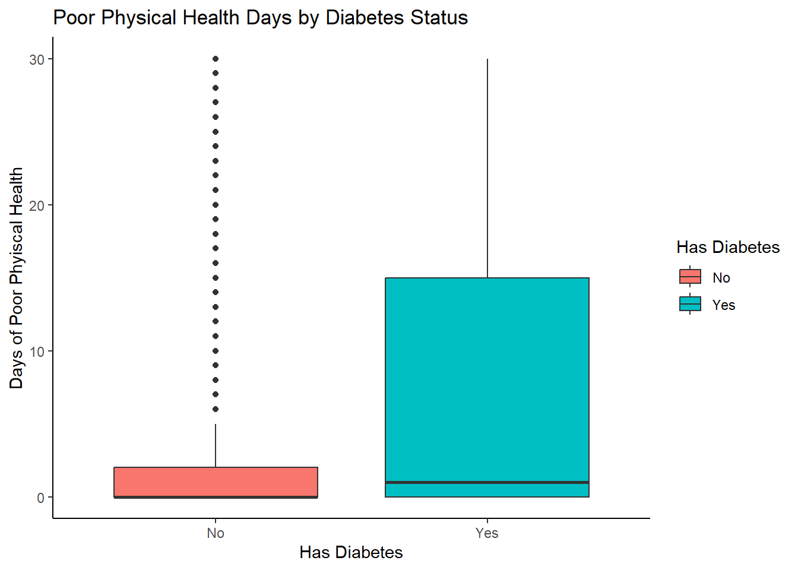

This project uses the 2015 BRFSS Diabetes Health Indicators data set. This page will be an exploration of the predictors physical health, Education, and health care coverage impact on the response Diabetes_binary, which identifies whether a person has diabetes or not. These variables were chosen based on their potential relationship to diabetes risk, as explore in this EDA. I want to later be able to model/predict the prevalence of diabetes with based on these variables/predictors.
Rows: 253680 Columns: 22
── Column specification ────────────────────────────────────────────────────────
Delimiter: ","
dbl (22): Diabetes_binary, HighBP, HighChol, CholCheck, BMI, Smoker, Stroke,...
ℹ Use `spec()` to retrieve the full column specification for this data.
ℹ Specify the column types or set `show_col_types = FALSE` to quiet this message.
library(dplyr)
Warning: package 'dplyr' was built under R version 4.5.1
Attaching package: 'dplyr'
The following objects are masked from 'package:stats':
filter, lag
The following objects are masked from 'package:base':
intersect, setdiff, setequal, union
Here I want to visualize the levels of educations and diabetes. What do the different levels of education and amount of diabetes look like? Is there one group that has a particular higher or lower amount?
library(ggplot2)ggplot(EDA_diabetes_data, aes(Education_fac, fill= Diabetes_binary_fac))+geom_bar(position ="fill") +labs(title ="Diabetes Status by Education Level",x="Education Level",y="Proportion", fill ="Has Diabetes") +theme_minimal()

From a preliminary glance, it appears that people who did not attend school or only completed up to the eighth grader are more likely to have diabetes. And the trend seems to go down as the education level increases. This might suggest that higher education may be associated with lower diabetes prevalence. Or there could be some socio-economic coincidences that go along with education level. More investigation is needed.
Health Care Coverage and Diabetes_binary
Here, I wanted to see if there was a hint of a relationship between access to health care coverage and the diabetes.
ggplot(EDA_diabetes_data, aes(x= Health_Care_Coverage, fill = Diabetes_binary_fac)) +geom_bar(position ="dodge") +labs(title ="Diabetes Status and Health Care Coverage",y="Count", fill ="Has Diabetes") +theme_minimal()

This one was interesting because before I ran the data display, I thought there was variation and it was none. All of the people sampled had some form of insurance. This raised more questions than answers.At first I thought I did something wrong and then I ran a simple count function revealing that all 241,263 people have health care coverage. This metric might not be as useful as I had initially hoped. I wonder what happened to the people that do not have health care coverage? Upon graphing I have the graph that is now displayed. There is a significantly greater amount of people with health care coverage than no coverage. And more than half of the people with coverage do not have diabetes. The people who are not covered a small amount have diabetes.
Physical Health and Diabetes
Here is a histogram of amount of poor physical health in the past 30 days. There is a lot of people who did not have poor phyiscal health, while only a few had poor physical health all 30 days.
ggplot(EDA_diabetes_data, aes(x= PhysHlth)) +geom_histogram(binwidth =2, fill ="blue", color ="white") +labs(title ="Days of Poor Phyiscal Health",x="Days of 30" ,y="Count" ) +theme_minimal()

Box Plot of Exercise and Diabetes. I think this will show a better picture of the distribution.
ggplot(EDA_diabetes_data, aes(x = Diabetes_binary_fac, y= PhysHlth, fill = Diabetes_binary_fac)) +geom_boxplot()+labs(title ="Poor Physical Health Days by Diabetes Status", x="Has Diabetes", y="Days of Poor Phyiscal Health",fill ="Has Diabetes" )+theme_classic()

This is a much better visualization of poor physical health and diabetes. The median for poor physical health days for people with diabetes appears to be slightly higher than the people without diabetes. Both distributions are skewed to the right, meaning most people report fewer days of poor health. This could be something that could be looked into further The spread of people who have diabetes is higher than the people who do not have diabetes.There are a lot of outliers for people who do not have diabetes. This data display might suggest that people with diabetes might have less good physical health days than people without, but there is also great variability within the group with diabetes. This means some people report numerous bad health days while others simply did not. This means more investigation is needed.
Below are to aid in getting default values for the API.